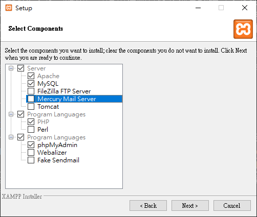
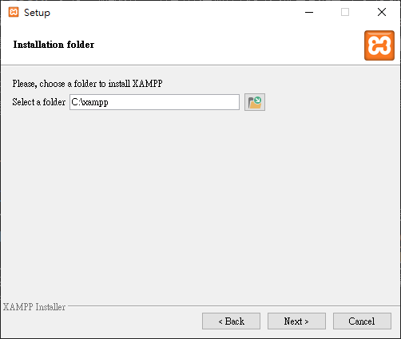
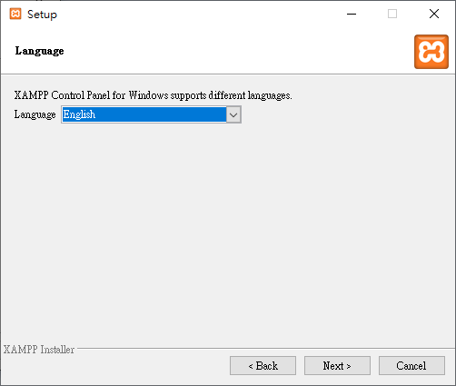
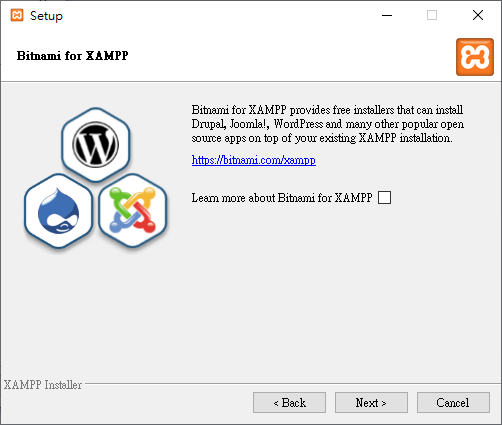
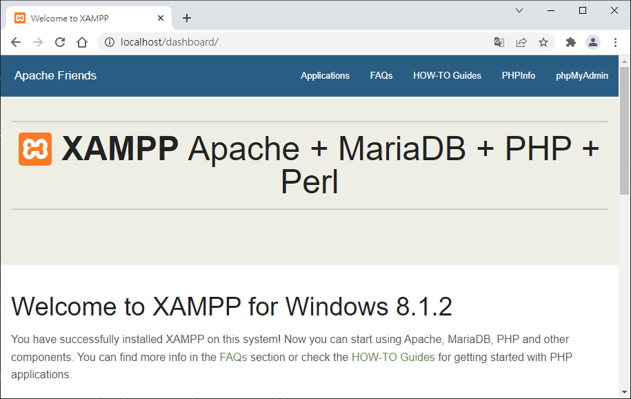

內容涵蓋
簡介
PHP(https://www.php.net/)的全名為Hypertext Preprocessor，它是個被廣泛運用在網頁程式撰寫的語言，它能適用於網頁程式的開發及能夠嵌入HTML文件之中。網頁與網頁伺服器利用CGI進行溝通，CGI(Common Gateway Interface)稱為共通閘道介面，PHP、ASP.NET等均為CGI技術 。PHP主要運用於伺服器端的程式語言，不同於ASP.NET，PHP為一內嵌語言如同JavaScript，使用者藉由將PHP程式碼嵌入HTML中來顯示伺服器端個執行結果。要運用PHP於伺服器端，系統必需要有：PHP的剖析器(CGI或Server模組)、網站伺服器與是網頁瀏灠器。 請注意php檔無法直接用瀏覽器開啟，必須藉由網頁伺服器的幫助 。以下為使用者端呼叫遠端php的處理流程。

軟體安裝-XAMPP
課程所需軟體包含PHP、Apache網易伺服器與MySQL資料庫，使用者可選擇個別安裝或使用整合套件，課程程將使用整合套件(XAMPP)。XAMPP(https://www.apachefriends.org/zh_tw/index.html是一個整合性PHP開發環境，使用者只須下載套件、並勾選安裝套件即可。連結至XAMPP官網、點選下載並選擇最新版本PHP，下載後，請選擇下圖套件進行安裝。請注意：課程套件僅需Apache(網頁伺服器)、MySQL(資料庫)、PHP、PHPMyAdmin(MySQL管理程式)，圖4中不須安裝Bitnami，因為安全性關係，每次使用都需進入XAMPP控制台(control panel)開啟Apache與MySQL，如需要更改組態設定或管理MySQL，請選擇Config，管理MySQL需要帳號登入，帳號為root，預設沒有密碼。





安裝環境確認
XAMPP預設安裝於C磁碟機中xampp目錄，目錄中的htdocs目錄為網站根目錄，所有的網頁、圖片、影片、檔案、樣式、字型等均須至於htdocs目錄中，要測試安裝是否成功，請先使用XAMPP控制台(control panel)開啟Apache，之後開啟瀏覽器並在網址列輸入 localhost ，如果有出現下圖結果，代表安裝成功。

PHP程式編輯軟體安裝-VS Code
PHP程式編輯軟體使用開源VS Code(https://code.visualstudio.com/)，下載安裝後，請安裝PHP intellisense延伸模組(選擇VS Code最左邊選項圖示中最後一個)，輸入PHP intellisense並點選安裝。安裝中文顯示套件請選擇延伸模組並輸入 language 後選擇安裝繁體中文套件。